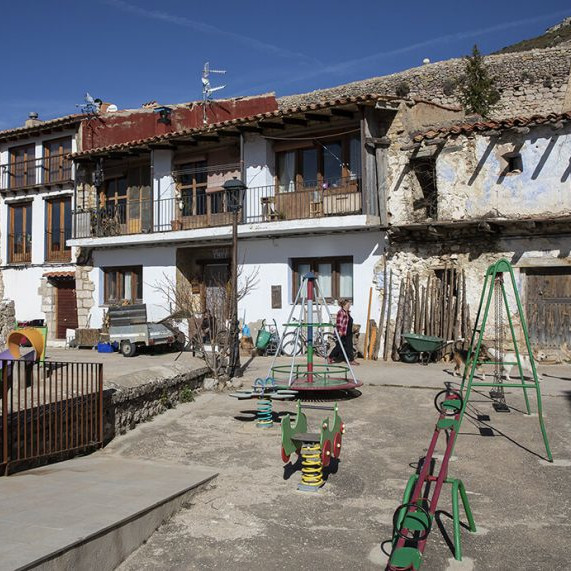

Táctica y estrategia
Lo que siento por ti no es amistad, voy por ti y esto va en serio. Una declaración de amor.
Mi táctica es mirarte, aprender como sos quererte, como sos.
Mi táctica es hablarte y escucharte, construir con palabras un puente indestructible.
Mi táctica es quedarme en tu recuerdo, no sé cómo ni sé con qué pretexto, pero quedarme en vos.
Mi táctica es ser franco y saber que sos franca y que no nos vendamos simulacros, para que entre los dos no haya telón ni abismos.
Mi estrategia es en cambio más profunda y más simple.
Mi estrategia es que un día cualquiera, no sé cómo ni sé con qué pretexto, por fin me necesites.